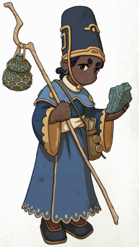
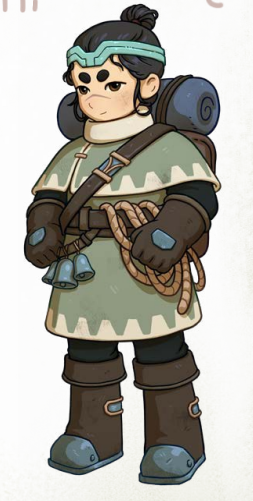
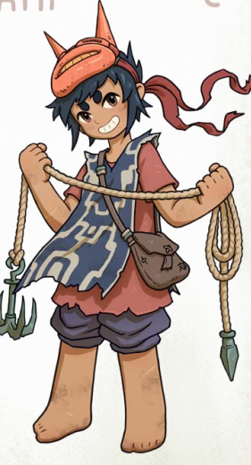
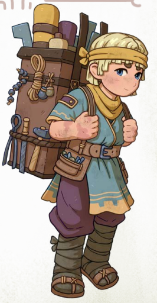

Chaque Vagabond suit un chemin différent au cours de son voyage dans les Ruines.
Ces cheminements représentent leur manière d’agir, leurs compétences et leur vision du monde.
Chaque voyage raconte une histoire.

Collectionneur de savoir, d'histoires et de cartes,
vous vous efforcez de percer les innombrables mystères des ruines.
Ce faisant, vous avez acquis une connaissance approfondie
des lutins, des esprits et des démons.
Peut-être cherchez-vous à transmettre votre savoir à d'autres voyageurs,
ou peut-être souhaitez-vous découvrir un secret particulier des ruines.
Le Conteur des Ruines est un véritable puits de science,
un conteur qui voit en chaque chose une histoire à raconter
ou une énigme à résoudre.
Il privilégie souvent l’intelligence et l’observation à la force brute.
Tracez votre propre chemin, pour vous-même et pour les autres.

L'Aventurier des Limites perçoit son séjour dans les ruines
comme une immense aventure, une épopée à laquelle il a la chance de participer.
Sa détermination et son courage lui permettent souvent
de se faire des alliés et des compagnons de voyage.
Grâce à lui, les ruines semblent un peu moins froides et désertes.
Leader naturel, il guide les autres sans imposer sa volonté.
Il cherche avant tout à soutenir son équipe
et à aider ses compagnons à avancer ensemble.
Les règles sont faites pour être enfreintes.

Démons, esprits, serviteurs…
Ils sont tous si sérieux en permanence.
Mais à quoi bon survivre si l’on ne profite pas de la vie ?
Le Lutins des Ruines incarne le désordre et la révolte,
un véritable fauteur de troubles qui adore provoquer le chaos.
Il se retrouve souvent dans des situations dangereuses,
mais parvient presque toujours à s’en sortir avec assurance et panache.
Pour lui, les ruines sont avant tout un immense terrain de jeu.
Les ruines fournissent.

Qu'il s'agisse de plantes médicinales, d'équipements oubliés
ou de provisions, vous savez toujours tirer profit des ruines.
D'autres voyageurs excellent peut-être dans le combat ou l'exploration,
mais vous savez comment survivre, vous nourrir
et prendre soin de votre matériel.
Le Rôdeur d'Éboulis est un voyageur autonome et ingénieux,
capable de réparer l’équipement cassé
et d’utiliser au mieux les ressources trouvées dans les ruines.